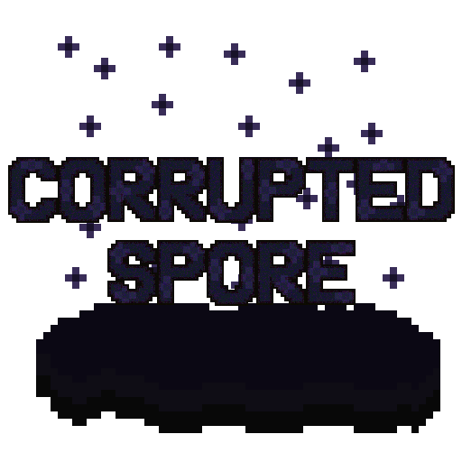

Corrupted Spore
>> Temperature: >NEUTRAL;
>> ClimateDownfall: >RARELLY_OFTEN;
>> Civilization: >NONE;
>> DangerLevel: >0/5;

DESCRIPTION
They are like desaturated purple spots that are usually surrounded by a dense purple fog. They are completely harmless and have no entity whatsoever. There is a rumor that if a "Root of Corruption" pierced the ground within this area, it would be capable of sprouting an "Ominous Valley." At the moment, we have no solid proof regarding this.

ORIGIN
This biome arises from the spores of a "Corruptiny." Many people believe it is a defense system or a way to establish territory. However, it is an attempt to generate an "Ominous Valley." This has led many to believe that entering this area is dangerous, but the reality is quite different; this area is empty of corrupt entities. However, there is doubt whether this could really become an "Ominous Valley." To delve into this topic is to enter into conspiracy and theorizing; there is no completely accurate answer to this question.

VEGETATION
When a "Corrupted Spore" is generated by a "Corruptiny," it commonly begins to spread through it in an attempt to find a way out and continue consuming land. It is important to get rid of all of them to prevent it from expanding indefinitely, because even though it appears harmless, we do not know for sure what its real intentions are.

MUSIC
This track will randomly play while being inside the biome: |